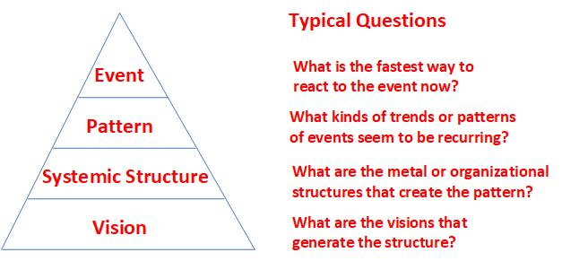

Systems Thinking
- Systems consists of elements, interconnections, function/purpose
- Stocks and flows determine system behavior over time
- Feedback loops drives stability (balancing, negative) or growth (reinforcing, positive)
- Delays and time lags cause oscillations and unintended effects
- Leverage points help infuence system outcomes effectively (rules, goals, feedback mechanisms, structures, and paradigms)
- Causal loop help identify reinforcingand balancing loops, unintended consequences, and leverage points
- System boundaries can reveal hidden influence and interactions
- Systems are dynamic, nonlinear, and adaptive rather than static
- Purposefuel systems (human organizations) behave differently from mechanical systems
- Interconnectedness: everything is part of a larger system with feedback loops/li>
- Emergence: system behavior arises from interactions, not individual components
- Delay & nonlinearity: small changes can have big, delayed, and unpredictable effects
- Leverage points: certain areas of a system have outsided influence for change
- Mental models: our assumptions and perspectives shape how we see and influence systems
- Adaptive & learning systems: systems evolve dynamically, requiring continous learning
- Systems archetypes: limits to growth, tragedy to the commons, success to the successful, and shifting the burden
- Bottleneck
- Second order thinking
- Iceberg model
